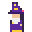
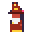
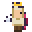
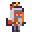
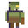

Boss trophies
| Trophy | Dropped by | Bonus when mounted in your village | |
|---|---|---|---|
 | Stuffed Archmage | The Archmage | +20 maximum mana |
 | Stuffed Magma Wizard | The Magma Wizard | Fire and lava hurt you 40% less |
 | Stuffed Sky Ranger | The Sky Ranger | Move 8% faster |
 | Stuffed Magma Knight | The Magma Knight | +3 defense |
 | Stuffed Grukk | Grukk the Ogre King | +20 maximum health |
 | Stuffed Ograk & Wimbly | The Goblin Beastmaster | Your animals hit 15% harder |
 | Stuffed Kraken | The Kraken | Hold your breath 50% longer |
 | Stuffed Vorthax | Vorthax | You deal 10% more damage |
 | Stuffed Ograk | undefined | It looks lovely there; set it on a bed for its bonus |
 | Stuffed Wimbly | undefined | It looks lovely there; set it on a bed for its bonus |
 | Stuffed Teddy | undefined | It looks lovely there; set it on a bed for its bonus |